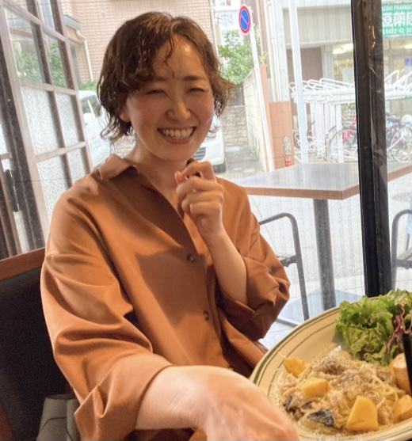

Web version skill sheet
|  | 名前：藤野 恭代(フジノ ユキヨ) 生年月日：1986年2月19日 中川学園調理技術専門学校を卒業後、製菓店にて販売員として5年半勤務 その後、サンルートプラザ東京やVentmodernoにてレストランや婚礼の接客を担当 2016年 株式会社オブジェクティブコード入社 |
| ヘルプデスク | 業務内容：法人向けレンタル端末のヘルプデスク お問い合わせ内容：故障や紛失によるレンタル端末交換手配 故障切り分けや端末操作方法などの問い合わせ MDMを使用した端末のリモート管理を行なっている企業が多い為、管理サイトの操作方法や不具合などに対するお問い合わせ。 期間：4年半 OJT経験：11人 |
| RSPコールセンター | 業務内容：コールセンターの業務改善 改善内容：コールセンターでの対応漏れ0件。マニュアル整理。育成スキーム作成。 改善の成果：対応漏れ、ミス発生0件。マニュアルや対応履歴の電子化。電話対応時のテンプレート作成。インシデント発生時のフロー作成。 期間：3ヵ月 |
| シェアードサービス | 業務内容：社内にて総務業務とシェアードサービス業務 総務の業務：給与管理。 シェアードサービスの業務：求人対応。社内マニュアル整備。エンジニア面談など 期間：9ヵ月 |
| RPA MEDIA | 業務内容：「15分できる！UiＰath」企画立案。 記事内容：UiPathのインストール方法から丁寧に教えてくれる記事を掲載。しかも15分以内でできます。(実際に測って確認しています。) 忙しい日常の合間に時間を選ばず勉強できるようにと思い掲載させていただいています。 期間：現在も連載中です。 |